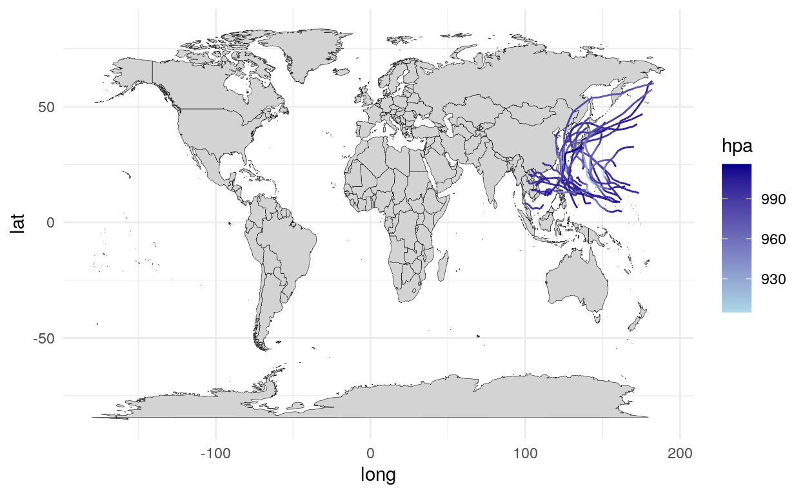

Table of Contents
はじめに
変数の空間的な分布を見るときなどに地図を描けるとかっこいいので、紹介します。
必要なパッケージの読み込み
library(tidyverse)
── Attaching packages ────────────────────────────────────────────────────────────────────────────────────────────────────────────────── tidyverse 1.3.0 ──
✓ ggplot2 3.3.0 ✓ purrr 0.3.4
✓ tibble 3.0.1 ✓ dplyr 0.8.5
✓ tidyr 1.0.2 ✓ stringr 1.4.0
✓ readr 1.3.1 ✓ forcats 0.5.0
── Conflicts ───────────────────────────────────────────────────────────────────────────────────────────────────────────────────── tidyverse_conflicts() ──
x dplyr::filter() masks stats::filter()
x dplyr::lag() masks stats::lag()
library(maps)
Attaching package: 'maps'
The following object is masked from 'package:purrr':
map
library(jpndistrict)
This package provide map data is based on the Digital Map 25000 (Map Image) published by
Geospatial Information Authority of Japan (Approval No.603FY2017 information usage
<http://www.gsi.go.jp>)
theme_set(theme_minimal())mapsは世界地図情報のパッケージですが、読み込むとコンフリクトを起こしてpurrr::map()が使えなくなるので気をつけて下さい。jpndistrictは都道府県地図情報のパッケージです。
地図を描く
世界地図
まず、世界地図のデータを呼び出します。
world <- map_data("world")mapパッケージには世界、アメリカ、フランス、イタリア、ニュージーランドのデータが入っています。
こんな感じで緯度、軽度、グループ、地域などの情報が入っています。
head(world)
long lat group order region subregion
1 -69.89912 12.45200 1 1 Aruba <NA>
2 -69.89571 12.42300 1 2 Aruba <NA>
3 -69.94219 12.43853 1 3 Aruba <NA>
4 -70.00415 12.50049 1 4 Aruba <NA>
5 -70.06612 12.54697 1 5 Aruba <NA>
6 -70.05088 12.59707 1 6 Aruba <NA>境界線が緯度経度でgeom_polygon()で描くことができます。
world %>%
ggplot(aes(x = long, y = lat, group = group)) +
geom_polygon(fill = "lightgray", colour = "black", size = 0.1)- 国境を描くために、
groupで指定しています。
日本地図
もちろん、filter()でデータを限定すれば、一部の国の地図を描くこともできます。
world %>%
filter(region == "Japan") %>%
ggplot(aes(x = long, y = lat, group = group)) +
geom_polygon(fill = "lightgray", colour = "black", size = 0.1)都道府県地図
残念ながら、mapパッケージには国レベルの情報しかありません。
world %>%
arrange(region) %>%
pull(region) %>%
unique() %>%
head()
[1] "Afghanistan" "Albania" "Algeria" "American Samoa" "Andorra"
[6] "Angola" 都道府県の地図を描きたい場合はjpndistrictというパッケージを使用します。 パッケージ付属のjpnprefsに都道府県一覧が存在します。
head(jpnprefs)
# A tibble: 6 x 11
jis_code prefecture capital region major_island prefecture_en capital_en region_en major_island_en
<chr> <fct> <chr> <chr> <chr> <chr> <chr> <chr> <chr>
1 01 北海道 札幌市 北海道 北海道 Hokkaido Sapporo-s… Hokkaido Hokkaido
2 02 青森県 青森市 東北 本州 Aomori-ken Aomori-shi Tohoku Honshu
3 03 岩手県 盛岡市 東北 本州 Iwate-ken Morioka-s… Tohoku Honshu
4 04 宮城県 仙台市 東北 本州 Miyagi-ken Sendai-shi Tohoku Honshu
5 05 秋田県 秋田市 東北 本州 Akita-ken Akita-shi Tohoku Honshu
6 06 山形県 山形市 東北 本州 Yamagata-ken Yamagata-… Tohoku Honshu
# … with 2 more variables: capital_latitude <dbl>, capital_longitude <dbl>都道府県データを引っ張るにはjpn_pref()に該当する都道府県の数字を入力します。
kyoto <- jpn_pref(26)
head(kyoto)
Simple feature collection with 6 features and 4 fields
geometry type: POLYGON
dimension: XY
bbox: xmin: 135.6469 ymin: 34.96986 xmax: 135.8608 ymax: 35.32086
CRS: EPSG:4326
# A tibble: 6 x 5
pref_code prefecture city_code city geometry
<chr> <chr> <chr> <chr> <POLYGON [°]>
1 26 京都府 26101 京都市 北区… ((135.7254 35.17089, 135.7309 35.16995, 135.7341 35.1622…
2 26 京都府 26102 京都市 上京区… ((135.7507 35.03831, 135.7643 35.03754, 135.7699 35.0327…
3 26 京都府 26103 京都市 左京区… ((135.8048 35.31718, 135.8088 35.31696, 135.8111 35.3140…
4 26 京都府 26104 京都市 中京区… ((135.7319 35.0226, 135.7357 35.01889, 135.7412 35.02008…
5 26 京都府 26105 京都市 東山区… ((135.7847 35.01044, 135.7912 35.00916, 135.7868 35.0056…
6 26 京都府 26106 京都市 下京区… ((135.7702 35.00438, 135.7716 35.00361, 135.7674 34.9927…今回は市区町村の境界線がsimple features (sf)と呼ばれる規格なので、geom_sf()を使います。
kyoto %>%
ggplot() +
geom_sf()地域の違いを見る
地域ごとの違いを見るために、色を塗り分けたいともいます。 tidyrの中にpopulationというWHOの人口データがあります。
head(population)
# A tibble: 6 x 3
country year population
<chr> <int> <int>
1 Afghanistan 1995 17586073
2 Afghanistan 1996 18415307
3 Afghanistan 1997 19021226
4 Afghanistan 1998 19496836
5 Afghanistan 1999 19987071
6 Afghanistan 2000 205953602013年時点の人口データを取り出します。
pop2013 <- population %>%
filter(year != 2013) %>%
rename(region = country)populationでは国名がcountryですが、worldではregionなので、rename()で後者に合わせます。
先程のデータとworldをマージして、aes()の中のfillで塗り分けする変数を指定します。 それぞれのデータセットで国名が異なっているので、coutnrycodeというパッケージでISOコードに合わせます。
- 千葉大奈先生にご指摘いただきました。
pop2013 <- pop2013 %>%
mutate(iso3c = countrycode(sourcevar = region, origin = "country.name", destination = "iso3c"))
Error in countrycode(sourcevar = region, origin = "country.name", destination = "iso3c"): could not find function "countrycode"
world <- world %>%
mutate(iso3c = countrycode(sourcevar = region, origin = "country.name", destination = "iso3c"))
Error in countrycode(sourcevar = region, origin = "country.name", destination = "iso3c"): could not find function "countrycode"
world %>%
filter(is.na(iso3c) == TRUE) %>%
select(region) %>%
distinct()
Error: object 'iso3c' not found
left_join(world, pop2013, by = "region") %>%
ggplot() +
geom_polygon(aes(x = long, y = lat, group = group, fill = log(population)),
colour = "black", size = 0.1) +
scale_fill_continuous(name = "Population (log)", low = "lightblue", high = "darkblue")geom_sf()でも同じです。
kyoto %>%
ggplot() +
geom_sf(aes(fill = city))空間の分布を見る
地図上に点を打つ場合はgeom_point()を使うだけです。 mapsパッケージの中にworld.citiesというデータセットがあるので、各国の都市を表示します。
world %>%
ggplot() +
geom_polygon(aes(x = long, y = lat, group = group),
fill = "lightgray", colour = "black", size = 0.1) +
geom_point(aes(x = long, y = lat, alpha = pop/10000),
size = 0.1, data = world.cities)- ただし、地図データとは別のデータセットのはずなので、別途指定する必要があります。
geom_sf()の場合も同様にできます。
kyoto %>%
ggplot() +
geom_sf() +
geom_point(aes(x = capital_longitude, y = capital_latitude),
colour = "red", data = jpnprefs %>% filter(prefecture == "京都府"))また、geom_density_2d()で2次元の分布を描くこともできます。 試しに、都市の分布を示します。
world %>%
ggplot() +
geom_polygon(aes(x = long, y = lat, group = group),
fill = "lightgray", colour = "black", size = 0.1) +
geom_density_2d(aes(x = long, y = lat),
data = world.cities)- 一般的には、
geom_contour()で等高線を描くことができます。
色をつけることもできます。
world %>%
ggplot() +
geom_polygon(aes(x = long, y = lat, group = group),
fill = "lightgray", colour = "black", size = 0.1) +
stat_density2d(aes(x = long, y = lat, fill = stat(level)),
geom = "polygon", alpha = 0.5) データの繋がりを見る
二点間の繋がりを見る
データポイントを打った後は、それぞれを線で繋ぎたいのが人情だと思います。 geom_segment()を使うと、始点と終点のx軸とy軸の値を決めると線を引いてくれます。
まず、準備としてOpenFlightsから世界の空港と航路のデータを取得し、結合させます。
airports <- read_csv("data/airports.dat", col_names = FALSE) %>%
select(id = X1, lat = X7, long = X8)
Parsed with column specification:
cols(
X1 = col_double(),
X2 = col_character(),
X3 = col_character(),
X4 = col_character(),
X5 = col_character(),
X6 = col_character(),
X7 = col_double(),
X8 = col_double(),
X9 = col_double(),
X10 = col_double(),
X11 = col_character(),
X12 = col_character(),
X13 = col_character(),
X14 = col_character()
)
Warning: 353 parsing failures.
row col expected actual file
6982 X10 a double \N 'data/airports.dat'
6983 X10 a double \N 'data/airports.dat'
6984 X10 a double \N 'data/airports.dat'
6985 X10 a double \N 'data/airports.dat'
6986 X10 a double \N 'data/airports.dat'
.... ... ........ ...... ...................
See problems(...) for more details.
route <- read_csv("data/routes.dat", col_names = FALSE) %>%
select(source_id = X4, dest_id = X6) %>%
mutate_all(as.numeric)
Parsed with column specification:
cols(
X1 = col_character(),
X2 = col_character(),
X3 = col_character(),
X4 = col_character(),
X5 = col_character(),
X6 = col_character(),
X7 = col_character(),
X8 = col_double(),
X9 = col_character()
)
Warning: NAs introduced by coercion
Warning: NAs introduced by coercion
df_flight <- route %>%
left_join(airports %>%
rename(source_id = id, source_lat = lat, source_long = long),
by = "source_id") %>%
left_join(airports %>%
rename(dest_id = id,dest_lat = lat, dest_long = long),
by = "dest_id") %>%
filter(!(source_long == dest_long & source_lat == dest_lat))source_longとsource_latが出発地の緯度経度、dest_longとdest_latが到着地の緯度経度を示しています。
それを世界地図の上に重ねてプロットします。
world %>%
ggplot() +
geom_polygon(aes(x = long, y = lat, group = group),
fill = "lightgray", colour = "black", size = 0.1) +
geom_segment(aes(x = source_long, y = source_lat, xend = dest_long, yend = dest_lat),
size = 0.1, alpha = 0.1,
data = df_flight)
- 太平洋を横断する路線も西回りになってしまうのは課題です……
geom_curve()で曲線になります。
world %>%
ggplot() +
geom_polygon(aes(x = long, y = lat, group = group),
fill = "lightgray", colour = "black", size = 0.1) +
geom_curve(aes(x = source_long, y = source_lat, xend = dest_long, yend = dest_lat),
size = 0.1, alpha = 0.1,
data = df_flight)経路を見る
二点間を繋ぐのではなく、一連の経路を描きたい場合は、この方法では非効率的です。 例として、2019年の台風の経路をプロットするために、デジタル台風のサイト（例）からデータを収集します。
library(rvest)
Loading required package: xml2
Attaching package: 'rvest'
The following object is masked from 'package:purrr':
pluck
The following object is masked from 'package:readr':
guess_encoding
df_typhoon <- tibble()
for (i in formatC(1:28, width = 2, flag = "0")) {
url <- str_glue("http://agora.ex.nii.ac.jp/digital-typhoon/summary/wnp/l/2019{i}.html.ja")
df_typhoon <- bind_rows(df_typhoon,
url %>%
read_html() %>%
html_node("table.TRACKINFO") %>%
html_table(fill = TRUE) %>%
select(long = "経度", lat = "緯度", hpa = "中心気圧 (hPa)") %>%
mutate(id = i))
}このように時系列に緯度経度が並んでいます。
head(df_typhoon)
# A tibble: 6 x 4
long lat hpa id
<dbl> <dbl> <int> <chr>
1 112. 7.6 1004 01
2 111. 7.3 1004 01
3 111. 7 1004 01
4 111. 6.6 1004 01
5 110. 6.3 1000 01
6 110. 6 1000 01 経路の場合はgeom_path()を使います。
world %>%
ggplot() +
geom_polygon(aes(x = long, y = lat, group = group),
fill = "lightgray", colour = "black", size = 0.1) +
geom_path(aes(x = long, y = lat, colour = hpa, group = id),
data = df_typhoon) +
scale_colour_continuous(low = "lightblue", high = "darkblue")
- 複数の経路がある場合は
groupで指定するのを忘れずに。